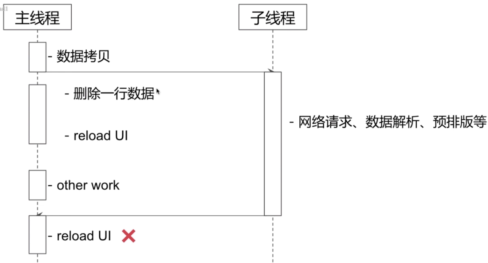
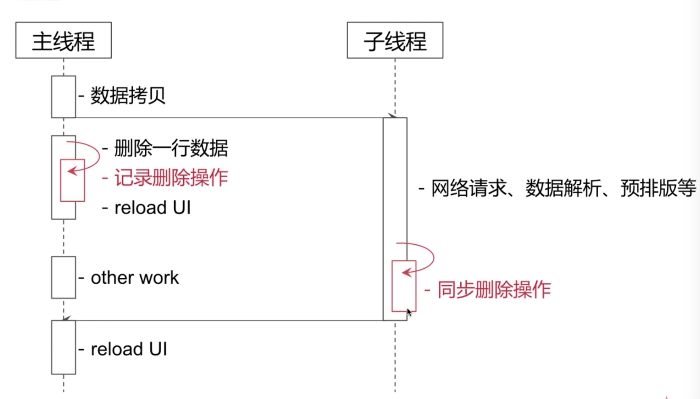
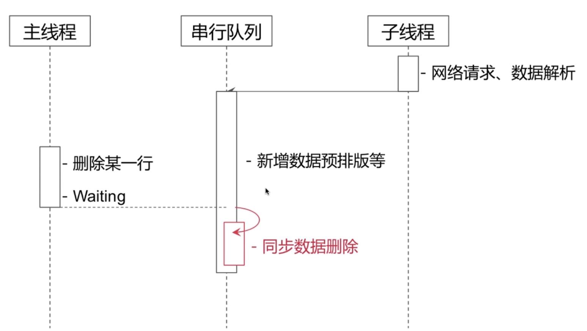

1.2.1并发访问、数据拷贝
并发及多个线程都可以执行在同一段时间，不需要互相等待，主线程与用户互动，子线程加载cell所需要的网络数据以及预排版
解决方法：如图，主线程首先拷贝一份数据给子线程完成预排版，网络请求与数据解析(json xml转化)，这时候如果主线程需要删除某些数据源操作，他就记录这条删除操作，在子线程完成各种加载操作后将这条操作与子线程进行同步一下，然后再回到主线程刷新界面
缺点：可能需要拷贝大量数据，比较消耗内
 
1.2.2串行访问
创建一个GCD串行队列，主线程增删改操作需要等待子线程操作完成
解决方法：如图，我们首先使用GCD创建一个串行队列，子线程先加入队列完成网络加载操作，如果这时候主线程需要修改数据源，这个操作就要等待子线程完成才去进行(串行执行)
缺点：可能子线程的网络请求速度慢，主线程UI操作等待时间长
